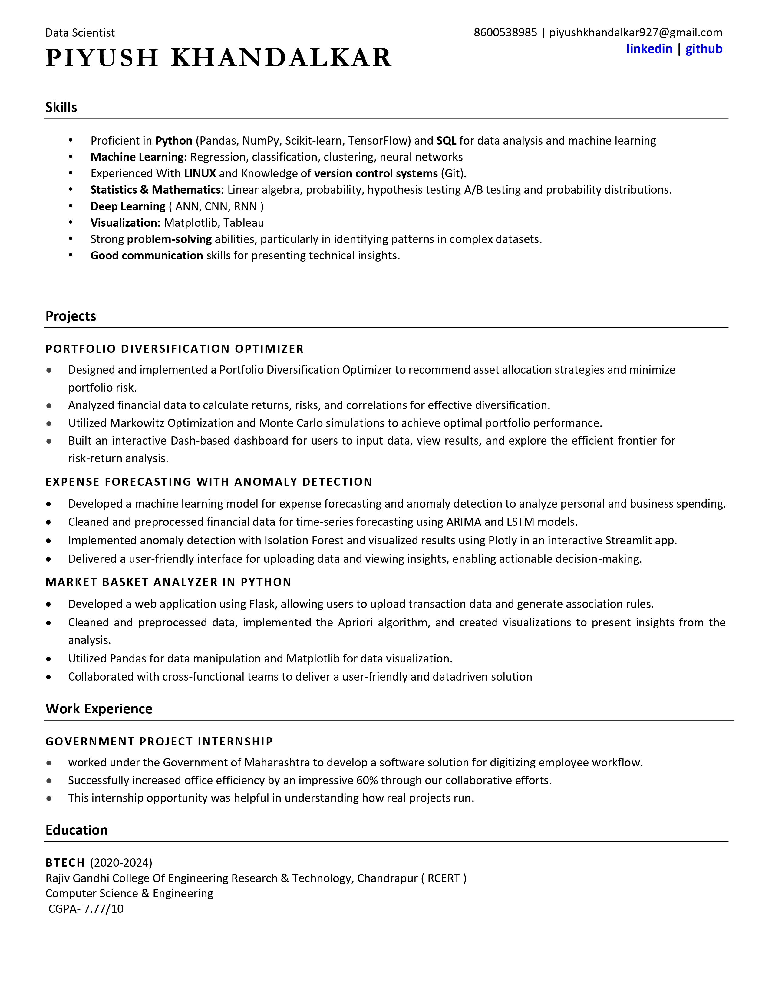

RESUME


Hi, I'm Piyush Khandalkar, and I’ve just completed my Computer Science Engineering degree from RCERT (2020-2024). My journey with technology started with a deep interest in data and its endless possibilities. I am passionate about using data to solve problems, and my curiosity drives me to explore new concepts and ideas.
In addition to my technical skills, I’m an avid chess player (though not a pro) and a fantasy book enthusiast. I love engaging in meaningful conversations and learning from others. I enjoy connecting with people across various communities, especially on platforms like Discord. I’m always eager to solve complex problems, and platforms like Kaggle allow me to continuously challenge myself and grow.
Whether it’s analyzing data, solving a problem, or discovering new strategies, I find joy in learning and growing through each experience.